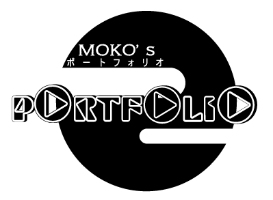
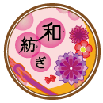
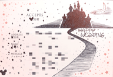
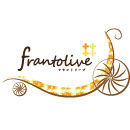
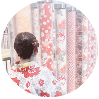

WORK
創作作品
- 
和紡ぎ
- 初創作作品。 一つ一つのちりめん細工の工夫と全体的に丸みを帯びた作品。 創作小物屋をイメージしています。
印鑑
- 和紡ぎに合わせた印鑑。 名前の【紀】の部分を印鑑の縁に合わせて延ばしてみました。 文字の装飾を考えた作品。
- 
返信はがき
- 友人の結婚式の返信用はがきに書いたもの。 手書きポールペンで書きました。 白黒にし、統一感を出しました。
クラウドワークス作品
Comfy plus
- クラウドワークス初作品。 造船所の近くにある美容院のロゴ。 文字のアレンジと丸みのある海をイメージし、美容院とわかるようハサミを入れました。
- 
frantolive
- 金木犀がモチーフの宅配生花店のロゴ。 女性客がメインターゲットのため、丸みのある柔らかなイメージにしています。 宅配のカートも丸みを持たせました。
亀田珈琲焙煎所
- ３０～５０代の男女をターゲットにした珈琲店のロゴ。 亀のイラストと亀の甲羅をイメージしたロゴを入れ、文字もアレンジしました。
ABOUT

KIMURA TOMOKO
- 出身
- 東京都生まれ。東京都育ち。 数年間千葉県での生活もあり。
- 趣味
- 温泉・旅行・カラオケ・ボウリング・おえかき・ディズニー・Harry Potter
- 活動
小学５年生からボランティア団体に所属。
特に中学生から大学生までは活動的に参加。
主な活動として、夏の子どもキャンプ運営、子ども会・区民祭りなどの地域のお手伝い